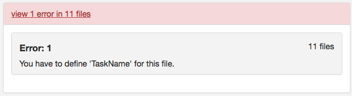

BIDS Tutorial Series: Automate the Introductory Walkthrough
Introduction
Welcome to part 1B of the tutorial series “Getting Started with BIDS”. This tutorial will illustrate how one can automate the conversation of DICOMs into a valid BIDS dataset. This tutorial will follow the same workflow detailed in part 1A of this tutorial series. We will be using DICOMs from the Nathan Kline Institute (NKI) Rockland Sample – Multiband Imaging Test-Retest Pilot Dataset. We will be following the specifications described in the BIDS Specification version 1.0.2. If you are running into issues, please post your questions on NeuroStars with the bids tag. The next parts of this tutorial series will examine off-the-shelf solutions to consider using to convert your dataset into the BIDS standard.
Table of Contents
B. Automated custom conversation
- Initialize script and create the dataset_description file
- Create anatomical folders and convert dicoms
- Rename anatomical files
- Organize anatomical files and validate
- Create diffusion folders and convert dicoms
- Rename diffusion files
- Organize diffusion files and validate
- Create functional folders and convert dicoms
- Rename and organize functional files
- Task event tsv files
- Fix errors
- Validate and add participant
The automated custom solution is going through the same process done in part 1A, but with a script. The automated custom solution is written in a bash shell script. This script is dependent upon homebrew, jo, jq, dcm2niix (jo and jq can be installed from homebrew). The script assumes that the Dicom folder with subjects needed to be converted exists. Each code snippet is part of the larger script.
Step 1. To begin, we need to define our paths and create the Nifti directory. These paths need to be changed according to what your paths are. These path variables are important to remember because these path variables are called throughout the script. (i.e. the variable niidir is defined as the path: /Users/franklinfeingold/Desktop/NKI_script/Nifti)
#!/bin/bash set -e ####Defining pathways toplvl=/Users/franklinfeingold/Desktop/NKI_script dcmdir=/Users/franklinfeingold/Desktop/NKI_script/Dicom dcm2niidir=/Users/franklinfeingold/Desktop/dcm2niix_3-Jan-2018_mac #Create nifti directory mkdir ${toplvl}/Nifti niidir=${toplvl}/Nifti
Then we can generate the dataset_description.json file.
###Create dataset_description.json
jo -p "Name"="NKI-Rockland Sample - Multiband Imaging Test-Retest Pilot Dataset" "BIDSVersion"="1.0.2" >> ${niidir}/dataset_description.json
Step 2. To begin the workflow, the loop prints out the subject currently being processed and creates the session and anat folder within the subject folder. Then we convert with dcm2niix the anatomical dicoms into the nifti and json file, and output them in the subject folder within the Nifti folder (output pictured below). Please note that the converter input is the anat folder within the subjects Dicom folder.
The for loop can iterate through every subject defined in the Dicom directory. For this walkthrough, we are only running through participant 2475376. One may add participant 3893245 when comfortable with the workflow. A participant will go through the entire workflow before the next one begins.
####Anatomical Organization#### for subj in 2475376; do echo "Processing subject $subj" ###Create structure mkdir -p ${niidir}/sub-${subj}/ses-1/anat ###Convert dcm to nii #Only convert the Dicom folder anat for direcs in anat; do ${dcm2niidir}/dcm2niix -o ${niidir}/sub-${subj} -f ${subj}_%f_%p ${dcmdir}/${subj}/${direcs} done
We changed the directory to where the converted nifti images are. In that directory, we can more easily change the filenames for the anat nii and json files.
#Changing directory into the subject folder
cd ${niidir}/sub-${subj}
Step 3. Now we can rename the anat files, following the same rule applied in step 6 of part A. This code snippet will capture the number of anat files needed to be changed, go through each anat file and rename it to the valid BIDS filename.
###Change filenames ##Rename anat files #Example filename: 2475376_anat_MPRAGE #BIDS filename: sub-2475376_ses-1_T1w #Capture the number of anat files to change anatfiles=$(ls -1 *MPRAGE* | wc -l) for ((i=1;i<=${anatfiles};i++)); do Anat=$(ls *MPRAGE*) #This is to refresh the Anat variable, if this is not in the loop, each iteration a new "No such file or directory error", this is because the filename was changed. tempanat=$(ls -1 $Anat | sed '1q;d') #Capture new file to change tempanatext="${tempanat##*.}" tempanatfile="${tempanat%.*}" mv ${tempanatfile}.${tempanatext} sub-${subj}_ses-1_T1w.${tempanatext} echo "${tempanat} changed to sub-${subj}_ses-1_T1w.${tempanatext}" done
Step 4. Next, we can organize the valid BIDS filenames into the ses-1/anat folder. The complete file structure to this point is pictured below.
###Organize files into folders
for files in $(ls sub*); do
Orgfile="${files%.*}"
Orgext="${files##*.}"
Modality=$(echo $Orgfile | rev | cut -d '_' -f1 | rev)
if [ $Modality == "T1w" ]; then
mv ${Orgfile}.${Orgext} ses-1/anat
else
:
fi
done
We have completed organizing the anat files. One can try confirming this is a validated BIDS dataset at this point. Once the validation is confirmed, we are ready to organize the diffusion files.
Step 5. To begin organizing the diffusion scans, we will generate the folder structure by creating a dwi folder within ses-1 and ses-2. Then we can convert the Dicom DTI folders within session1 and session2 and output the nii and json files to the participants Nifti folder. The output and current file structure can be seen below.
####Diffusion Organization####
#Create subject folder
mkdir -p ${niidir}/sub-${subj}/{ses-1,ses-2}/dwi
###Convert dcm to nii
#Converting the two diffusion Dicom directories
for direcs in session1 session2; do
${dcm2niidir}/dcm2niix -o ${niidir}/sub-${subj} -f ${subj}_${direcs}_%p ${dcmdir}/${subj}/${direcs}/DTI*
done
Next, we change the directory into the participants Nifti folder, where the converted nii and json files are.
#Changing directory into the subject folder
cd ${niidir}/sub-${subj}
Step 6. Now we can rename the diffusion nii and json files, similar to step 9 in part A. The original filename and BIDS filename are printed out.
#change dwi #Example filename: 2475376_session2_DIFF_137_AP_RR #BIDS filename: sub-2475376_ses-2_dwi #difffiles will capture how many filenames to change difffiles=$(ls -1 *DIFF* | wc -l) for ((i=1;i<=${difffiles};i++)); do Diff=$(ls *DIFF*) #This is to refresh the diff variable, same as the cases above. tempdiff=$(ls -1 $Diff | sed '1q;d') tempdiffext="${tempdiff##*.}" tempdifffile="${tempdiff%.*}" Sessionnum=$(echo $tempdifffile | cut -d '_' -f2) Difflast=$(echo "${Sessionnum: -1}") if [ $Difflast == 2 ]; then ses=2 else ses=1 fi mv ${tempdifffile}.${tempdiffext} sub-${subj}_ses-${ses}_dwi.${tempdiffext} echo "$tempdiff changed to sub-${subj}_ses-${ses}_dwi.${tempdiffext}" done
Step 7. After the filenames have been renamed, we can organize the files into their correct directories. The filenames and structure are visualized below.
###Organize files into folders
for files in $(ls sub*); do
Orgfile="${files%.*}"
Orgext="${files##*.}"
Modality=$(echo $Orgfile | rev | cut -d '_' -f1 | rev)
Sessionnum=$(echo $Orgfile | cut -d '_' -f2)
Difflast=$(echo "${Sessionnum: -1}")
if [[ $Modality == "dwi" && $Difflast == 2 ]]; then
mv ${Orgfile}.${Orgext} ses-2/dwi
else
if [[ $Modality == "dwi" && $Difflast == 1 ]]; then
mv ${Orgfile}.${Orgext} ses-1/dwi
fi
fi
done
We have completed the organization of the diffusion scans. One may confirm this is still a valid BIDS dataset through validation. Once validated, we are ready to organize the functional scans.
Step 8. To begin organizing the functional scans, we will create the functional folder structure by adding a func folder to both ses-1 and ses-2. With the folders created, we can now convert the functional dicom files to nifti and json files. To do this, we converted the folders that comprise the functional dicoms and output the nii and json files to within the participant’s folders in the Nifti directory. The folder names are contained within the for loop. The output and folder structure is visualized below.
####Functional Organization####
#Create subject folder
mkdir -p ${niidir}/sub-${subj}/{ses-1,ses-2}/func
###Convert dcm to nii
for direcs in TfMRI_breathHold_1400 TfMRI_eyeMovementCalibration_1400 TfMRI_eyeMovementCalibration_645 TfMRI_visualCheckerboard_1400 TfMRI_visualCheckerboard_645 session1 session2; do
if [[ $direcs == "session1" || $direcs == "session2" ]]; then
for rest in RfMRI_mx_645 RfMRI_mx_1400 RfMRI_std_2500; do
${dcm2niidir}/dcm2niix -o ${niidir}/sub-${subj} -f ${subj}_${direcs}_%p ${dcmdir}/${subj}/${direcs}/${rest}
done
else
${dcm2niidir}/dcm2niix -o ${niidir}/sub-${subj} -f ${subj}_${direcs}_%p ${dcmdir}/${subj}/${direcs}
fi
done
We changed the directory into where the converted nii and json files are, in the participant’s Nifti folder.
#Changing directory into the subject folder
cd ${niidir}/sub-${subj}
Step 9. Now we can rename the func files, similar to step 12 in part A. To do this, we changed filenames task by task. The order we renamed in: Checkerboard, eye movement, breath hold, and rest. Note that the rest scans still span across 2 sessions.
Checkerboard files renamed
##Rename func files #Break the func down into each task #Checkerboard task #Example filename: 2475376_TfMRI_visualCheckerboard_645_CHECKERBOARD_645_RR #BIDS filename: sub-2475376_ses-1_task-Checkerboard_acq-TR645_bold #Capture the number of checkerboard files to change checkerfiles=$(ls -1 *CHECKERBOARD* | wc -l) for ((i=1;i<=${checkerfiles};i++)); do Checker=$(ls *CHECKERBOARD*) #This is to refresh the Checker variable, same as the Anat case tempcheck=$(ls -1 $Checker | sed '1q;d') #Capture new file to change tempcheckext="${tempcheck##*.}" tempcheckfile="${tempcheck%.*}" TR=$(echo $tempcheck | cut -d '_' -f4) #f4 is the fourth field delineated by _ to capture the acquisition TR from the filename mv ${tempcheckfile}.${tempcheckext} sub-${subj}_ses-1_task-Checkerboard_acq-TR${TR}_bold.${tempcheckext} echo "${tempcheckfile}.${tempcheckext} changed to sub-${subj}_ses-1_task-Checkerboard_acq-TR${TR}_bold.${tempcheckext}" done
Eye movement calibration files renamed
#Eye Movement #Example filename: 2475376_TfMRI_eyeMovementCalibration_645_EYE_MOVEMENT_645_RR #BIDS filename: sub-2475376_ses-1_task-eyemovement_acq-TR645_bold #Capture the number of eyemovement files to change eyefiles=$(ls -1 *EYE* | wc -l) for ((i=1;i<=${eyefiles};i++)); do Eye=$(ls *EYE*) tempeye=$(ls -1 $Eye | sed '1q;d') tempeyeext="${tempeye##*.}" tempeyefile="${tempeye%.*}" TR=$(echo $tempeye | cut -d '_' -f4) #f4 is the fourth field delineated by _ to capture the acquisition TR from the filename mv ${tempeyefile}.${tempeyeext} sub-${subj}_ses-1_task-eyemovement_acq-TR${TR}_bold.${tempeyeext} echo "${tempeyefile}.${tempeyeext} changed to sub-${subj}_ses-1_task-eyemovement_acq-TR${TR}_bold.${tempeyeext}" done
Breath holding files renamed
#Breath Hold #Example filename: 2475376_TfMRI_breathHold_1400_BREATH_HOLD_1400_RR #BIDS filename: sub-2475376_ses-1_task-breathhold_acq-TR1400_bold #Capture the number of breath hold files to change breathfiles=$(ls -1 *BREATH* | wc -l) for ((i=1;i<=${breathfiles};i++)); do Breath=$(ls *BREATH*) tempbreath=$(ls -1 $Breath | sed '1q;d') tempbreathext="${tempbreath##*.}" tempbreathfile="${tempbreath%.*}" TR=$(echo $tempbreath | cut -d '_' -f4) #f4 is the fourth field delineated by _ to capture the acquisition TR from the filename mv ${tempbreathfile}.${tempbreathext} sub-${subj}_ses-1_task-breathhold_acq-TR${TR}_bold.${tempbreathext} echo "${tempbreathfile}.${tempbreathext} changed to sub-${subj}_ses-1_task-breathhold_acq-TR${TR}_bold.${tempbreathext}" done
Rest files renamed
#Rest
#Example filename: 2475376_session1_REST_645_RR
#BIDS filename: sub-2475376_ses-1_task-rest_acq-TR645_bold
#Breakdown rest scans into each TR
for TR in 645 1400 CAP; do
for corrun in $(ls *REST_${TR}*); do
corrunfile="${corrun%.*}"
corrunfileext="${corrun##*.}"
Sessionnum=$(echo $corrunfile | cut -d '_' -f2)
sesnum=$(echo "${Sessionnum: -1}")
if [ $sesnum == 2 ]; then
ses=2
else
ses=1
fi
if [ $TR == "CAP" ]; then
TR=2500
else
:
fi
mv ${corrunfile}.${corrunfileext} sub-${subj}_ses-${ses}_task-rest_acq-TR${TR}_bold.${corrunfileext}
echo "${corrun} changed to sub-${subj}_ses-${ses}_task-rest_acq-TR${TR}_bold.${corrunfileext}"
done
done
Next, we will organize the files into the correct directories. We have shown below, the filenames and organization.
###Organize files into folders
for files in $(ls sub*); do
Orgfile="${files%.*}"
Orgext="${files##*.}"
Modality=$(echo $Orgfile | rev | cut -d '_' -f1 | rev)
Sessionnum=$(echo $Orgfile | cut -d '_' -f2)
Difflast=$(echo "${Sessionnum: -1}")
if [[ $Modality == "bold" && $Difflast == 2 ]]; then
mv ${Orgfile}.${Orgext} ses-2/func
else
if [[ $Modality == "bold" && $Difflast == 1 ]]; then
mv ${Orgfile}.${Orgext} ses-1/func
fi
fi
done
Step 10. Now we need to create the task event tsv files for each of our tasks. The task designs can be found on the NKI webpage. To determine the Checkerboard events file, one will look at the Checkerboard task design. Here we generated the Checkerboard TR=645 event file.
###Create events tsv files ##Create Checkerboard event file #Checkerboard acq-TR645 #Generate Checkerboard acq-TR645 event tsv if it doesn't exist if [ -e ${niidir}/task-Checkerboard_acq-TR645_events.tsv ]; then : else #Create events file with headers echo -e onset'\t'duration'\t'trial_type > ${niidir}/task-Checkerboard_acq-TR645_events.tsv #This file will be placed at the level where dataset_description file and subject folders are. #The reason for this file location is because the event design is consistent across subjects. #If the event design is consistent across subjects, we can put it at this level. This is because of the Inheritance principle. #Create onset column echo -e 0'\n'20'\n'40'\n'60'\n'80'\n'100 > ${niidir}/temponset.txt #Create duration column echo -e 20'\n'20'\n'20'\n'20'\n'20'\n'20 > ${niidir}/tempdur.txt #Create trial_type column echo -e Fixation'\n'Checkerboard'\n'Fixation'\n'Checkerboard'\n'Fixation'\n'Checkerboard > ${niidir}/temptrial.txt #Paste onset and duration into events file paste -d '\t' ${niidir}/temponset.txt ${niidir}/tempdur.txt ${niidir}/temptrial.txt >> ${niidir}/task-Checkerboard_acq-TR645_events.tsv #remove temp files rm ${niidir}/tempdur.txt ${niidir}/temponset.txt ${niidir}/temptrial.txt fi
Since both acquisitions have the same task design, we can simply copy the events file, but renamed.
##Checkerboard acq-TR1400 #Generate Checkerboard acq-TR1400 event tsv if it doesn't exist if [ -e ${niidir}/task-Checkerboard_acq-TR1400_events.tsv ]; then : else #Because the checkerboard design is consistent across the different TRs #We can copy the above event file and change the name cp ${niidir}/task-Checkerboard_acq-TR645_events.tsv ${niidir}/task-Checkerboard_acq-TR1400_events.tsv fi
Now, we will generate the event file for eye movement. We downloaded the eye movement paradigm. The path that we set for eye movement paradigm was: /Users/franklinfeingold/Desktop/EyemovementCalibParadigm.txt . This needs to be edited in the script to where one placed their paradigm file.
##Eye movement acq-TR645 #Generate eye movement acq-TR645 event tsv if it doesn't exist if [ -e ${niidir}/task-eyemovement_acq-TR645_events.tsv ]; then : else #Create events file with headers echo -e onset'\t'duration > ${niidir}/task-eyemovement_acq-TR645_events.tsv #Creating duration first to help generate the onset file #Create temponset file onlength=$(cat /Users/franklinfeingold/Desktop/EyemovementCalibParadigm.txt | wc -l) for ((i=2;i<=$((onlength-1));i++)); do ontime=$(cat /Users/franklinfeingold/Desktop/EyemovementCalibParadigm.txt | sed "${i}q;d" | cut -d ',' -f1) echo -e ${ontime} >> ${niidir}/temponset.txt done cp ${niidir}/temponset.txt ${niidir}/temponset2.txt echo 108 >> ${niidir}/temponset2.txt #Eye calibration length is 108 seconds #Generate tempdur file durlength=$(cat ${niidir}/temponset2.txt | wc -l) for ((i=1;i<=$((durlength-1));i++)); do durtime=$(cat ${niidir}/temponset2.txt | sed $((i+1))"q;d") onsettime=$(cat ${niidir}/temponset2.txt | sed "${i}q;d") newdur=$(echo "$durtime - $onsettime"|bc) echo "${newdur}" >> ${niidir}/tempdur.txt done #Paste onset and duration into events file paste -d '\t' ${niidir}/temponset.txt ${niidir}/tempdur.txt >> ${niidir}/task-eyemovement_acq-TR645_events.tsv #rm temp files rm ${niidir}/tempdur.txt ${niidir}/temponset.txt ${niidir}/temponset2.txt fi
Since the task design is consistent across different TR, we can simply copy the task design, but with a different filename.
##Eye movement acq-TR1400 #Generate eye movement acq-TR1400 event tsv if it doesn't exist if [ -e ${niidir}/task-eyemovement_acq-TR1400_events.tsv ]; then : else #Because the eye movement calibration is consistent across the different TRs #We can copy the above event file and change the name cp ${niidir}/task-eyemovement_acq-TR645_events.tsv ${niidir}/task-eyemovement_acq-TR1400_events.tsv fi
Lastly, we will create the event file for the breath hold task by looking at the breath hold design file.
##Breath hold acq-TR1400 #Generate breath hold acq-TR1400 event tsv if it doesn't exist if [ -e ${niidir}/task-breathhold_acq-TR1400_events.tsv ]; then : else #Create events file with headers echo -e onset'\t'duration > ${niidir}/task-breathhold_acq-TR1400_events.tsv #Create duration column #Creating duration first to help generate the onset file dur1=10 dur2=2 dur3=3 #Create tempdur file for ((i=1;i<=7;i++)); do echo -e ${dur1}'\n'${dur2}'\n'${dur2}'\n'${dur2}'\n'${dur2}'\n'${dur3}'\n'${dur3}'\n'${dur3}'\n'${dur3}'\n'${dur3}'\n'${dur3} >> ${niidir}/tempdur.txt done #Create onset column #Initialize temponset file echo -e 0 > ${niidir}/temponset.txt #Generate temponset file durlength=$(cat ${niidir}/tempdur.txt | wc -l) for ((i=1;i<=$((durlength-1));i++)); do durtime=$(cat ${niidir}/tempdur.txt | sed "${i}q;d") onsettime=$(cat ${niidir}/temponset.txt | sed "${i}q;d") newonset=$((durtime+onsettime)) echo ${newonset} >> ${niidir}/temponset.txt done #Paste onset and duration into events file paste -d '\t' ${niidir}/temponset.txt ${niidir}/tempdur.txt >> ${niidir}/task-breathhold_acq-TR1400_events.tsv #rm temp files rm ${niidir}/tempdur.txt ${niidir}/temponset.txt fi
Pictured below is the current file structure.
Step 11. At this point, one may try validating. However, one will receive the same error message from part A regarding defining TaskName in the task json files. The slice timing for multiband imaging was corrected in the version of dcm2niix implemented in the script.

To correct this error, we will confirm that each task json file has the required fields: RepetitionTime, VolumeTiming or SliceTiming, and TaskName. This code snippet will evaluate if RepetitionTime exists, if SliceTiming (or VolumeTiming) exist and the timings are all less than the RepetitionTime, and if TaskName is defined. In addition, if TaskName is not defined, TaskName will be added to the json file with TaskName being the task label in the filename.
###Check func json for required fields #Required fields for func: 'RepetitionTime','VolumeTiming' or 'SliceTiming', and 'TaskName' #capture all jsons to test for sessnum in ses-1 ses-2; do cd ${niidir}/sub-${subj}/${sessnum}/func #Go into the func folder for funcjson in $(ls *.json); do #Repeition Time exist? repeatexist=$(cat ${funcjson} | jq '.RepetitionTime') if [[ ${repeatexist} == "null" ]]; then echo "${funcjson} doesn't have RepetitionTime defined" else echo "${funcjson} has RepetitionTime defined" fi #VolumeTiming or SliceTiming exist? #Constraint SliceTiming can't be great than TR volexist=$(cat ${funcjson} | jq '.VolumeTiming') sliceexist=$(cat ${funcjson} | jq '.SliceTiming') if [[ ${volexist} == "null" && ${sliceexist} == "null" ]]; then echo "${funcjson} doesn't have VolumeTiming or SliceTiming defined" else if [[ ${volexist} == "null" ]]; then echo "${funcjson} has SliceTiming defined" #Check SliceTiming is less than TR sliceTR=$(cat ${funcjson} | jq '.SliceTiming[] | select(.>="$repeatexist")') if [ -z ${sliceTR} ]; then echo "All SliceTiming is less than TR" #The slice timing was corrected in the newer dcm2niix version called through command line else echo "SliceTiming error" fi else echo "${funcjson} has VolumeTiming defined" fi fi #Does TaskName exist? taskexist=$(cat ${funcjson} | jq '.TaskName') if [ "$taskexist" == "null" ]; then jsonname="${funcjson%.*}" taskfield=$(echo $jsonname | cut -d '_' -f2 | cut -d '-' -f2) jq '. |= . + {"TaskName":"'${taskfield}'"}' ${funcjson} > tasknameadd.json rm ${funcjson} mv tasknameadd.json ${funcjson} echo "TaskName was added to ${jsonname} and matches the tasklabel in the filename" else Taskquotevalue=$(jq '.TaskName' ${funcjson}) Taskvalue=$(echo $Taskquotevalue | cut -d '"' -f2) jsonname="${funcjson%.*}" taskfield=$(echo $jsonname | cut -d '_' -f2 | cut -d '-' -f2) if [ $Taskvalue == $taskfield ]; then echo "TaskName is present and matches the tasklabel in the filename" else echo "TaskName and tasklabel do not match" fi fi done done
Step 12. Now if we try to validate, we find that this dataset is a valid BIDS dataset! To capture both subjects, one can change the subj for loop at the top of the script to replace participant 3893245 for 2475376 in the loop. After running participant 3893245 through the workflow, we find the same warnings as the part A curated dataset; the checkerboard scans across subjects have different time dimensions and the dwi may be missing scans because there is only 1 diffusion scan for participant 3893245 and 2 diffusion scans for participant 2475376. Note: Do not have both participants in the for loop if one has already been run and organized, this will cause an error.
This first tutorial part illustrated how to convert DICOMs from the NKI Test-Retest dataset to a validated BIDS dataset. We illustrated doing it A. manually and B. an automated custom solution. The next tutorial will show how to complete this conversation using an off-the-shelf BIDS converter: HeuDiconv.

{kind=link}
{kind=link}
{kind=link}
{kind=link}
{kind=link}
{kind=link}
{kind=link}
{kind=link}
Thank you for your question. To distinguish your MOCO file you may add to the filename the “rec” label. This rec label would be placed after task and acq (acq is optional). This can be found described here: http://bids.neuroimaging.io/bids_spec1.1.0.pdf#page=22
Thank you for your question. To confirm, were you able to download and install the jo package successfully? The jo package can found here: https://github.com/jpmens/jo .
Hi, I have a question about pathway in this script:
####Defining pathways
toplvl=/Users/franklinfeingold/Desktop/NKI_script
dcmdir=/Users/franklinfeingold/Desktop/NKI_script/Dicom
dcm2niidir=/Users/franklinfeingold/Desktop/dcm2niix_3-Jan-2018_mac
#Create nifti directory
mkdir ${toplvl}/Nifti
niidir=${toplvl}/Nifti
####Anatomical Organization####
for subj in 2475376; do
echo “Processing subject $subj”
###Create structure
mkdir -p ${niidir}/sub-${subj}/ses-1/anat
###Convert dcm to nii
#Only convert the Dicom folder anat
for direcs in anat; do
${dcm2niidir}/dcm2niix -o ${niidir}/sub-${subj} -f ${subj}_%f_%p ${dcmdir}/${subj}/${direcs}
done
From my understanding dcmdir is a Dicom folder with sub folders for every subject. So I have a folder named Dicom on my computer with sub folders for each subject. Then a new folder on the Dicom level is created for new Nifti files. And subject 2475376 is a subfolder of Dicom with dicom files inside. With this set up the script is not running properly. The Nifty folder is being created with the structure but I am getting a message saying no dicoms are found for converting. Can you please explain how my folders should be set up? Where subjects should be placed etc.?
Hi Rachel,
Thank you for your question. To confirm, your dicom file structure should look like Dicom/2475376/anat/*.dcm . It may appear that the anat folder is missing.
The dicom file structure is shown in part 1A of this tutorial series: http://reproducibility.stanford.edu/bids-tutorial-series-part-1a/. For example, at step 5 I showed the file structure for the anatomical scan. The script is going into each scan sequence dicom directory. This is being done in the last section of the code you posted under the “#Only convert the Dicom folder anat” comment. The for loop is running through the anat folder to only convert the anatomical scan.
Hi Franklin,
I have no access to original dicom files, only nifti, .par, and .rec files. Is it possible to convert my files to BIDS format (automated way preferably) at this point? If it’s possible, what would be the way to go about this?
Thanks!
Paulina
Hi Paulina,
Thank you for your question! It is possible to convert your files to the BIDS format from the nifti files. (for the .par and .rec files they may be converted to nifti as well. I found this question that may explain how to do that – https://www.nitrc.org/forum/message.php?msg_id=11974). Once you have the nifti this tutorial shows how to rename and structure those niftis to follow the BIDS format. For example in anatomicals this would be following step 3 and 4. This may require writing a script that changes your current naming and structure to BIDS. Step 3 and 4 provide one way this may be done.
Thank you,
Franklin